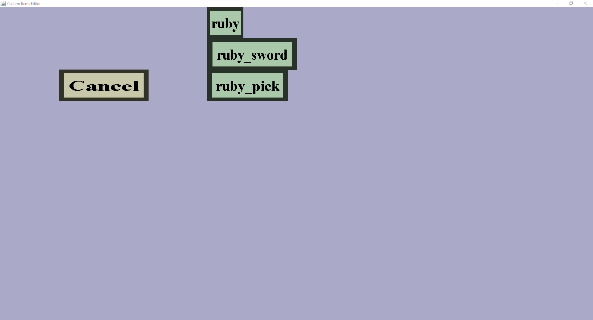

The custom item selection menu is the menu from which you can add custom items as ingredients (or final product) to crafting recipes. It should look like this:
The menu consists out of the item buttons in the middle and a cancel button on the left.
The 'Cancel' button will take you back to the previous menu (being Create Shapeless Recipe or Create Shaped Recipe), disregarding the changes you made. Note that there is no way to recover the changes made after pressing the 'Cancel' button.
The item buttons direct you back to the previous menu (being Create Shapeless Recipe or Create Shaped Recipe), and adding that item to that recipe. In this example, pressing the 'ruby' button will add a 'ruby' to the crafting recipe (either as ingredient or as the final product, depending on how you got to this menu).